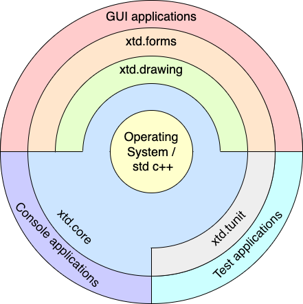

(*) See portability for more information.
Feature
• Free and open-source (MIT License). A collection of native C++ classes libraries, to complete std.
• API close to the .net API with modern C++ approach and full integration with the std standard.
• xtd is designed to manage GUI controls and dialogs in pure native mode or with CSS styles.
• Written in efficient, modern c++17/20 with RAII programming idiom.
• And highly portable and available on many different platforms.
xtd libraries architecture

xtd is composed of several libraries.
xtd.core
The xtd.core library is modern c++17/20 library of classes, interfaces, and value types that provide access to system functionality. It is the foundation on which c++ applications, components, and controls are built.
xtd.drawing The xtd.drawing library contains types that support basic GDI+ graphics functionality. Child namespaces support advanced two-dimensional and vector graphics functionality, advanced imaging functionality, and print-related and typographical services. A child namespace also contains types that extend design-time user-interface logic and drawing.
The xtd.drawing library contains types that support basic GDI+ graphics functionality. Child namespaces support advanced two-dimensional and vector graphics functionality, advanced imaging functionality, and print-related and typographical services. A child namespace also contains types that extend design-time user-interface logic and drawing.
xtd.forms The xtd.forms library contains classes for creating Windows-based applications that take full advantage of the rich user interface features available in the Microsoft Windows, Apple macOS and linux operating system.
The xtd.forms library contains classes for creating Windows-based applications that take full advantage of the rich user interface features available in the Microsoft Windows, Apple macOS and linux operating system.
xtd.tunit The xtd.tunit library is a unit-testing framework for modern C++17/20 inspired by Microsoft.VisualStudio.TestTools.Cpp.
The xtd.tunit library is a unit-testing framework for modern C++17/20 inspired by Microsoft.VisualStudio.TestTools.Cpp.
See xtd libraries hierarchy.
Objectives and Mission
• xtd is a powerful, yet easy to use platform to build your applications upon.
• xtd is modular and scalable from embedded applications.
• xtd provides consistent, comprehensive and comprehensible programming interfaces.
• xtd favors simplicity over complexity ("as simple as possible, but not simpler").
• xtd aims for consistency in design, coding style and documentation.
• xtd emphasizes source code quality, in terms of readability, comprehensiveness, consistency, style and testability.
• xtd aims to make C++ programming fun again Guiding Principles
• Strong focus on code quality, style, consistency and code readability – all code must satisfy our coding style guide.
• Strong focus on tests (automated unit tests with high coverage).
• Build on top of solid foundations – use existing proven C, C++ or Objective-C libraries (e.g. Win32 APi, Gtk4, AppKit,...) where it makes sense.
Getting started
• Installation provides download and install documentation.
• Guides provides xtd guides and tutorials.
• Examples provides over 700 examples to help you use xtd, grouped by libraries and topics.